PSSFSS Examples
Symmetric Strip Grating
This example consists of a symmetric strip grating, i.e. a grating where the strip width is half the unit cell period $P$:

Only three of the infinite number of strips in the grating are shown, and they extend infinitely to the left and right. The grating lies in the $z=0$ plane with free space on both sides. The shaded areas represent metalization. The dashed lines show two possible choices for the unit cell location: "J" for a formulation in terms of electric surface currents, and "M" for magnetic surface currents.
For normal incidence there is a closed-form solution due to Weinstein, but for a more recent reference one can find the solution in Problem 10.6 of R. E. Collin, Field Theory of Guided Waves, Second Ed., IEEE Press, 1991. Here is the code for computing the exact solution:
"""
grating(kP, nterms=30) -> (Γ, T)
Compute the normal incidence reflecton and transmission coefficients of a symmetric grid of
zero-thickness conducting strips. The product of the period of the strips and the incident
electric field wavenumber is `kP` (dimensionless). The incident electric field is
perpendicular to the direction along the axis of the strips. The series have been
accelerated by applying a Kummer's transformation, using the first two terms in the Maclaurin
series for the inverse sin function. `kP` must be in the half-open interval [0,1). The
default number of summed terms `nterms` yields better than 10 digits of accuracy over the
interval [0.01,0.99].
"""
function grating(kP; nterms=30)
sum1 = 1.3862943611198906 # \sum_{n=1}^{\infty} 1/(n-1/2) - 1/n = log(4)
sum3 = 7.2123414189575710 # \sum_{n=1}^{\infty} (n-1/2)^{-3} - n^{-3} = 6 * \zeta(3)
x = kP/(4π)
θ = x*sum1 + x^3/6 * sum3
for n = 1:nterms
xonmhalf = x/(n - 0.5)
xon = x/n
term = asin(xonmhalf) - (xonmhalf + (xonmhalf)^3/6) -
(asin(xon) - (xon + xon^3/6))
θ += term
end
Γ = sin(θ) * cis(-π/2 - θ)
T = 1 + Γ
return (Γ, T)
endMain.__atexample__named__symmetric_strip.grating
Note that using the extension of Babinet's Principle for electromagnetic fields this also provides the solution (upon appropriate interchange and sign change of the coefficients) for the case where the incident wave polarization is parallel to the direction of the strips.
Here is the PSSFSS code to analyze this structure using electric currents as the unknowns. We will scale the geometry so that the frequency in GHz is numerically equal to the period of the strips measured in wavelengths.
using Plots, PSSFSS
c = 11.802852677165355 # light speed [inch*GHz]
period = c # so the period/wavelength = freq in GHz
Py = period
Ly = period/2
Px = Lx = Ly/10 # Infinite in x direction so this can be anything
Ny = 60
Nx = round(Int, Ny*Lx/Ly)
sheet = rectstrip(;Px, Py, Lx, Ly, Nx, Ny, units=inch)
flist = 0.02:0.02:0.98
steering = (θ=0, ϕ=0)
strata = [Layer()
sheet
Layer()]
results_j = analyze(strata, flist, steering, showprogress=false,
resultfile=devnull, logfile=devnull);
p1 = plot(sheet)
p2 = plot(sheet, unitcell=true)
ptitle = plot(title = "Symmetric Strip Triangulation",
grid = false, showaxis = false, xtick=[], ytick=[],
bottom_margin = -50Plots.px)
plot(ptitle, p1, p2, layout = @layout([A{0.09h}; [B C]]))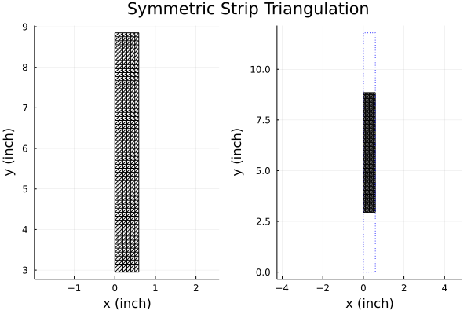 <<<<<<< HEAD
Note that setting Lx = Px causes the strip to fully occupy the x-extent of the unit cell. PSSFSS automatically ensures that the triangle edges at these unit cell boundaries define basis functions that satisfy the Floquet (phase shift) boundary conditions, so that currents are free to flow across these unit cell boundaries.
We can also analyze the same structure using magnetic currents in the areas free of metalization as the unknowns:
sheet = rectstrip(;class='M', Px, Py, Lx, Ly, Nx, Ny, units=inch)
strata = [Layer()
sheet
Layer()]
results_m = analyze(strata, flist, steering, showprogress=false,
resultfile=devnull, logfile=devnull);Each 50-frequency run of analyze takes about 14 seconds for this geometry of 720 triangles on my machine. More detailed timing information is available in the log file (which is omitted for generating this documentation).
We will compare the PSSFSS results to the analytic solution:
# Generate exact results:
rt = grating.(2π*flist)
rperp_exact = first.(rt)
tperp_exact = last.(rt)
rpar_exact = -tperp_exact
tpar_exact = -rperp_exact;Obtain PSSFSS results for electric and magnetic currents:
outrequest = @outputs s11(v,v) s21(v,v) s11(h,h) s21(h,h)
rperp_j, tperp_j, rpar_j, tpar_j =
collect.(eachcol(extract_result(results_j, outrequest)))
rperp_m, tperp_m, rpar_m, tpar_m =
collect.(eachcol(extract_result(results_m, outrequest)));Generate the comparison plots:
angdeg(z) = rad2deg(angle(z)) # Convenience function
p1 = plot(title = "Perpendicular Reflection Magnitude",
xlabel = "Period (wavelengths)",
ylabel = "Coefficient Magnitude",
legend=:topleft)
plot!(p1, flist, abs.(rperp_exact), ls=:dash, label="Exact")
plot!(p1, flist, abs.(rperp_j), label="PSSFSS J")
plot!(p1, flist, abs.(rperp_m), label="PSSFSS M")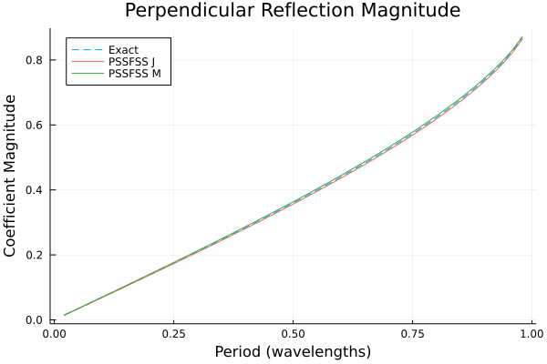
p2 = plot(title = "Perpendicular Reflection Phase",
xlabel = "Period (wavelengths)",
ylabel = "Phase (deg)")
plot!(p2, flist, angdeg.(rperp_exact), ls=:dash, label="Exact")
plot!(p2, flist, angdeg.(rperp_j), label="PSSFSS J")
plot!(p2, flist, angdeg.(rperp_m), label="PSSFSS M")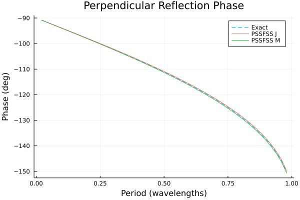
p1 = plot(title = "Parallel Reflection Magnitude",
xlabel = "Period (wavelengths)",
ylabel = "Coefficient Magnitude")
plot!(p1, flist, abs.(rpar_exact), ls=:dash, label="Exact")
plot!(p1, flist, abs.(rpar_j), label="PSSFSS J")
plot!(p1, flist, abs.(rpar_m), label="PSSFSS M")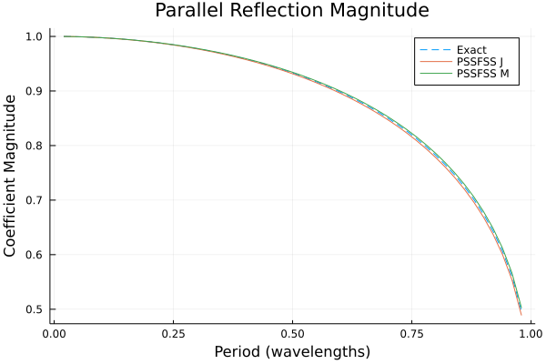
p2 = plot(title = "Parallel Reflection Phase",
xlabel = "Period (wavelengths)",
ylabel = "Phase (deg)")
plot!(p2, flist, angdeg.(rpar_exact), ls=:dash, label="Exact")
plot!(p2, flist, angdeg.(rpar_j), label="PSSFSS J")
plot!(p2, flist, angdeg.(rpar_m), label="PSSFSS M")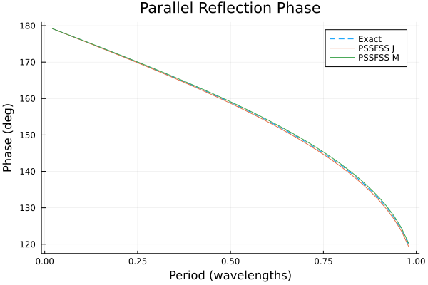
Now look at the transmission coefficients:
p1 = plot(title = "Perpendicular Transmission Magnitude",
xlabel = "Period (wavelengths)",
ylabel = "Coefficient Magnitude")
plot!(p1, flist, abs.(tperp_exact), ls=:dash, label="Exact")
plot!(p1, flist, abs.(tperp_j), label="PSSFSS J")
plot!(p1, flist, abs.(tperp_m), label="PSSFSS M")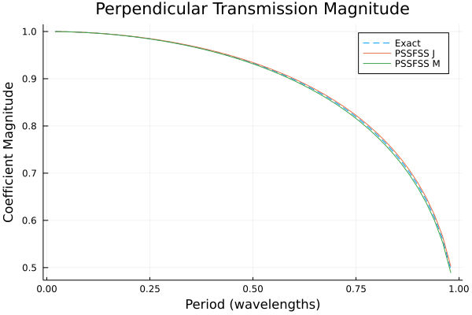
p2 = plot(title = "Perpendicular Transmission Phase",
xlabel = "Period (wavelengths)",
ylabel = "Phase (deg)")
plot!(p2, flist, angdeg.(tperp_exact), ls=:dash, label="Exact")
plot!(p2, flist, angdeg.(tperp_j), label="PSSFSS J")
plot!(p2, flist, angdeg.(tperp_m), label="PSSFSS M")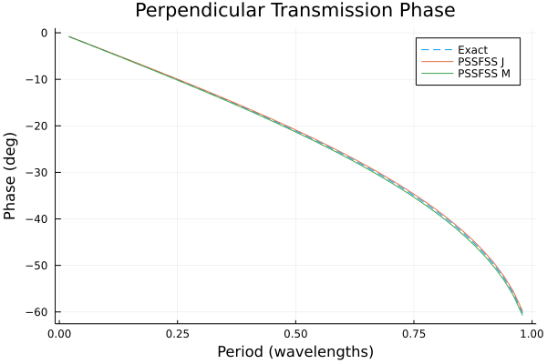
p1 = plot(title = "Parallel Transmission Magnitude",
xlabel = "Period (wavelengths)",
ylabel = "Coefficient Magnitude", legend=:topleft)
plot!(p1, flist, abs.(tpar_exact), ls=:dash, label="Exact")
plot!(p1, flist, abs.(tpar_j), label="PSSFSS J")
plot!(p1, flist, abs.(tpar_m), label="PSSFSS M")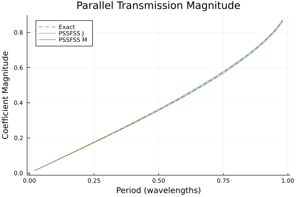
p2 = plot(title = "Parallel Transmission Phase",
xlabel = "Period (wavelengths)",
ylabel = "Phase (deg)")
plot!(p2, flist, angdeg.(tpar_exact), ls=:dash, label="Exact")
plot!(p2, flist, angdeg.(tpar_j), label="PSSFSS J")
plot!(p2, flist, angdeg.(tpar_m), label="PSSFSS M")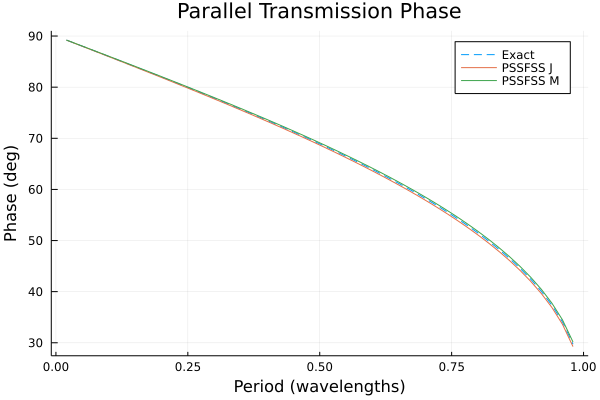
Conclusion
Although good agreement is obtained, as expected the best agreement between all three results occurs for the lowest frequencies, where the triangles are smallest in terms of wavelength. This emphasizes the fact that it is necessary for the user to check that enough triangles have been requested for good convergence over the frequency band of interest. This example is an extremely demanding case in terms of bandwidth, as the ratio of maximum to minimum frequency here is $0.98/0.02 = 49:1$
Resistive Square Patch
This example will demonstrate the ability of PSSFSS to accurately model finite conductivity of FSS metalization. It consists of a square finitely conducting patch in a square lattice. It is taken from a paper by Alon S. Barlevy and Yahya Rahmat-Samii, "Fundamental Constraints on the Electrical Characteristics of Frequency Selective Surfaces", Electromagnetics, vol. 17, 1997, pp. 41-68. This particular example is from Section 3.2, Figures 7 and 8. We will compare PSSFSS results to those digitized from the cited figures.
We start by defining a function that creates a patch of the desired sheet resistance:
using Plots, PSSFSS
patch(R) = rectstrip(Nx=10, Ny=10, Px=1, Py=1, Lx=0.5, Ly=0.5, units=cm, Rsheet=R)
plot(patch(0), unitcell=true)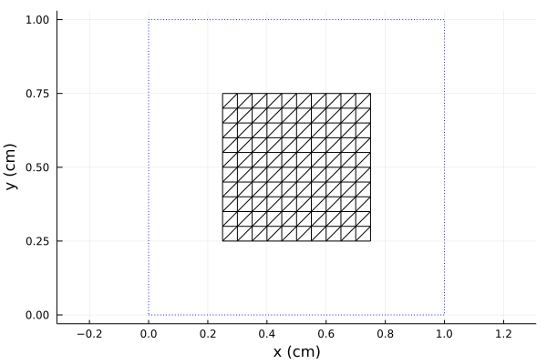
The patches measure 0.5 cm on a side and lie in a square lattice of period 1 cm. Now we perform the analysis, looping over the desired values of sheet resistance.
steering = (ϕ=0, θ=0)
flist = 1:0.5:60
Rs = [0, 10, 30, 100]
calculated = zeros(length(flist), length(Rs)) # preallocate storage
outputs = @outputs s11mag(v,v)
for (i,R) in pairs(Rs)
strata = [Layer(), patch(R), Layer()]
results = analyze(strata, flist, steering, showprogress=false,
logfile=devnull, resultfile=devnull)
calculated[:,i] = extract_result(results, outputs)
endLooping over the four sheet resistance values, each evaluated at 119 frequencies required approximately 20 seconds on my machine.
We plot the results, including those digitized from the paper for comparison:
using DelimitedFiles
markers = (:diamond, :utriangle, :square, :xcross)
colors = (:blue, :red, :green, :black)
p = plot(xlim=(-0.01,60.01), xtick = 0:10:60, ylim=(-0.01,1.01), ytick=0:0.1:1,
xlabel="Frequency (GHz)", ylabel="Reflection Coefficient Magnitude",
title = "Resistive Square Patch",
legend=:topright)
for (i,R) in pairs(Rs)
scatter!(p, flist, calculated[:,i], label="PSSFSS $R Ω", ms=2, shape=markers[i], color=colors[i])
data = readdlm("../src/assets/barlevy_patch_digitized_$(R)ohm.csv", ',')
plot!(p, data[:,1], data[:,2], label="Barlevy $R Ω", ls=:dash, color=colors[i])
end
p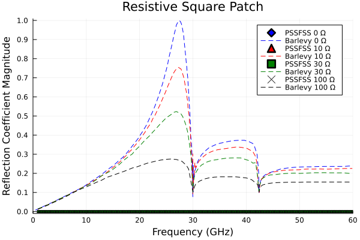
Conclusion
PSSFSS results are indistinguishable from those reported in the cited paper.
Cross on Dielectric Substrate
This example is also taken from the paper by Alon S. Barlevy and Yahya Rahmat-Samii, "Fundamental Constraints on the Electrical Characteristics of Frequency Selective Surfaces", Electromagnetics, vol. 17, 1997, pp. 41-68. This particular example is from Section 3.2, Figures 7 and 8. It also appeared at higher resolution in Barlevy's PhD dissertation from which the comparison curves were digitized.
We use the loadedcross element where we choose w > L2/2, so that the Cross is "unloaded", i.e. the center section is filled in with metalization:
using Plots, PSSFSS, DelimitedFiles
sheet = loadedcross(w=1.0, L1=0.6875, L2=0.0625, s1=[1.0,0.0],
s2=[0.0,1.0], ntri=600, units=cm)
plot(sheet, unitcell=true)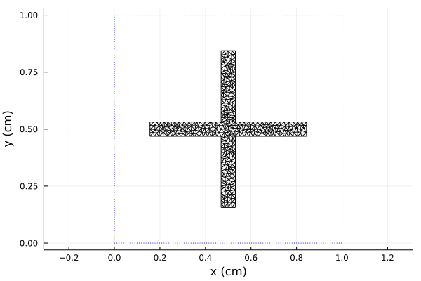
A few things to note. First, the mesh is unstructured. So there are no redundant triangle face-pairs that PSSFSS can exploit to reduce execution time. Second, the number of triangle faces generated is only approximately equal to the requested value of 600. This can be verified by entering the Julia variable sheet at the REPL (i.e. the Julia prompt):
sheetRWGSheet: style=loadedcross, class=J, 404 nodes, 1054 edges, 651 faces
The cross FSS is etched on a dielectric sheet of thickness 3 mm. The dielectric constant is varied over the values 1, 2, and 4 to observe the effect on the resonant frequency. Following the reference, the list of analysis frequencies is varied slightly depending on the value of dielectric constant:
resultsstack = Any[]
steering = (ϕ=0, θ=0)
for eps in [1, 2, 4]
strata = [ Layer()
sheet
Layer(ϵᵣ=eps, width=3mm)
Layer()
]
if eps == 1
flist = 1:0.2:30
elseif eps == 2
flist = 1:0.2:26
else
flist = 1:0.2:20
end
results = analyze(strata, flist, steering, showprogress=false,
resultfile=devnull, logfile=devnull)
push!(resultsstack, results)
endThe above loop requires about 80 seconds of execution time on my machine. Compare PSSFSS results to those digitized from the dissertation figure:
col=[:red,:blue,:green]
p = plot(xlim=(0.,30), xtick = 0:5:30, ylim=(0,1), ytick=0:0.1:1,
xlabel="Frequency (GHz)", ylabel="Reflection Coefficient Magnitude",
legend=:topleft, lw=2)
for (i,eps) in enumerate([1,2,4])
data = extract_result(resultsstack[i], @outputs FGHz s11mag(v,v))
plot!(p, data[:,1], data[:,2], label="PSSFSS ϵᵣ = $eps", lc=col[i])
data = readdlm("../src/assets/barlevy_diss_eps$(eps).csv", ',')
plot!(p, data[:,1], data[:,2], label="Barlevy ϵᵣ = $eps", lc=col[i], ls=:dot)
end
p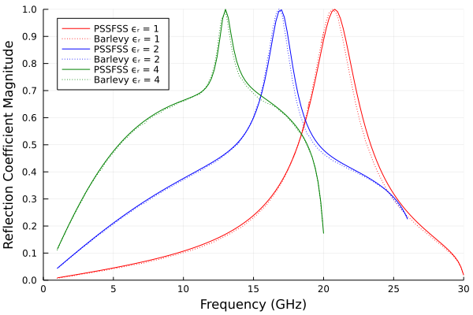
Conclusion
PSSFSS results agree very well with those of the cited reference, especially when accounting for the fact that the reference results are obtained by digitizing a scanned figure.
Square Loop Absorber
This example is from Figure 7 of Costa and Monorchio: "A frequency selective radome with wideband absorbing properties", IEEE Trans. AP-S, Vol. 60, no. 6, June 2012, pp. 2740–2747. It shows how one can use the polyring function to model square loop elements. Three different designs are examined that employ different loop thicknesses and different values of sheet resistance. We compare the reflection coefficient magnitudes computed by PSSFSS with those digitized from the cited figure when the sheet is suspended 5 mm above a ground plane, hence we will also make use of the pecsheet function.
using Plots, PSSFSS, DelimitedFiles
D = 11 # Period of square lattice (mm)
r_outer = √2/2 * D/8 * [5,6,7] # radii of square outer vertices
thickness = D/16 * [1,2,3]
r_inner = r_outer - √2 * thickness # radii of square inner vertices
Rs = [15,40,70] # Sheet resistance (Ω/□)
labels = ["Thin", "Medium", "Thick"]
colors = [:green, :blue, :red]
p = plot(title="Costa Absorber", xlim=(0,25),ylim=(-35,0),xtick=0:5:25,ytick=-35:5:0,
xlabel="Frequency (GHz)", ylabel="Reflection Magnitude (dB)", legend=:bottomleft)
ps = []
for (i,(ri, ro, label, color, R)) in enumerate(zip(r_inner, r_outer, labels, colors, Rs))
sheet = polyring(sides=4, s1=[D, 0], s2=[0, D], ntri=700, orient=45,
a=[ri], b=[ro], Rsheet=R, units=mm)
push!(ps, plot(sheet, unitcell=true, title=label, lc=color))
strata = [Layer()
sheet
Layer(width=5mm)
pecsheet() # Perfectly conducting ground plane
Layer()]
results = analyze(strata, 1:0.2:25, (ϕ=0, θ=0), showprogress=false,
resultfile=devnull, logfile=devnull)
data = extract_result(results, @outputs FGHz s11dB(h,h))
plot!(p, data[:,1], data[:,2], label="PSSFSS "*label, lc=color)
dat = readdlm("../src/assets/costa_2014_" * lowercase(label) * "_reflection.csv", ',')
plot!(p, dat[:,1], dat[:,2], label="Costa "*label, ls=:dash, lc=color)
end
plot(ps..., layout=(1,3))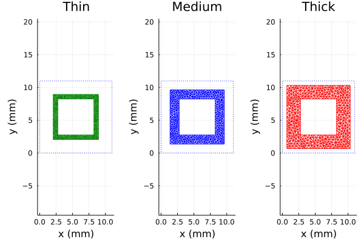
This run takes about 85 seconds on my machine.
p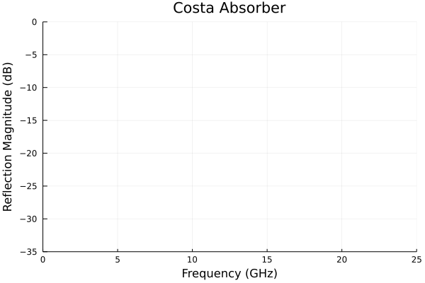
It is useful to take a look at the log file created by PSSFSS for the last run above:
Starting PSSFSS analysis on 2021-05-05 at 15:22:09.955
Dielectric layer information...
Layer Width units epsr tandel mur mtandel modes beta1x beta1y beta2x beta2y
----- ------------- ------- ------ ------- ------ ----- ------- ------- ------- -------
1 0.0000 mm 1.00 0.0000 1.00 0.0000 2 571.2 0.0 0.0 571.2
================== Sheet 1 ======================== 571.2 0.0 0.0 571.2
2 5.0000 mm 1.00 0.0000 1.00 0.0000 42 571.2 0.0 0.0 571.2
================== Sheet 2 ======================== 0.0 0.0 0.0 0.0
3 0.0000 mm 1.00 0.0000 1.00 0.0000 2 571.2 0.0 0.0 571.2
PSS/FSS sheet information...
Sheet Loc Style Rot J/M Faces Edges Nodes Unknowns NUFP
----- --- ---------------- ----- --- ----- ----- ----- -------- ------
1 1 polyring 0.0 J 753 1201 448 1058 567009
2 2 NULL 0.0 E 0 0 0 0 0
...Note from the dielectric layer report that there are 42 modes defined in the region between the ground plane and the FSS sheet. This is the number of modes selected by the code to include in the generalized scattering matrix formulation to properly account for electromagnetic coupling between the two surfaces. If the 5 mm spacing were increased to, say, 7 mm then fewer modes would be needed. Also note in the FSS sheet information that NUFP (the number of unique face pairs) is exactly equal to the number of faces squared ($567009 = 753^2$), a consequence of the unstructured triangulation used for a polyring.
Conclusion
PSSFSS results agree very well with those of the paper, except for the medium width loop, where the agreement is not quite as good. The reason for this is not known.
Loaded Cross Band Pass Filter
This example is originally from Fig. 7.9 of B. Munk, Frequency Selective Surfaces, Theory and Design, John Wiley and Sons, 2000. The same case was analyzed in L. Li, D. H. Werner et al, "A Model-Based Parameter Estimation Technique for Wide-Band Interpolation of Periodic Moment Method Impedance Matrices With Application to Genetic Algorithm Optimization of Frequency Selective Surfaces", IEEE Trans. AP-S, vol. 54, no. 3, March 2006, pp. 908-924, Fig. 6. Unfortunately, in neither reference are the dimensions of the loaded cross stated, except for the square unit cell period of 8.61 mm. I estimated the dimensions from the sketch in Fig. 6 of the second reference. To provide a reliable comparison, I enlisted my colleague Mike Maybell, principal of Planet Earth Communications, who generously offered to analyze the filter using CST Microwave Studio, a rigorous commercial finite volume electromagnetic solver.
Two identical loaded cross slot-type elements are separated by a 6 mm layer of dielectric constant 1.9. Outboard of each sheet is a 1.1 cm layer of dielectric constant 1.3. The closely spaced sheets are a good test of the generalized scattering formulation implemented in PSSFSS. The sheet geometry is shown below. Remember that the entire sheet is metalized except for the region of the triangulation.
using Plots, PSSFSS
sheet = loadedcross(class='M', w=0.023, L1=0.8, L2=0.14,
s1=[0.861,0.0], s2=[0.0,0.861], ntri=600, units=cm)
plot(sheet, unitcell=true)
steering = (ϕ=0, θ=0)
strata = [ Layer()
Layer(ϵᵣ=1.3, width=1.1cm)
sheet
Layer(ϵᵣ=1.9, width=0.6cm)
sheet
Layer(ϵᵣ=1.3, width=1.1cm)
Layer() ]
flist = 1:0.1:20
results = analyze(strata, flist, steering, resultfile=devnull,
logfile=devnull, showprogress=false)
data = extract_result(results, @outputs FGHz s21db(v,v) s11db(v,v))
using DelimitedFiles
dat = readdlm("../src/assets/MaybellLoadedCrossResults.csv", ',', skipstart=1)
p = plot(xlabel="Frequency (GHz)", ylabel="Reflection Coefficient (dB)",
legend=:left, title="Loaded Cross Band-Pass Filter", xtick=0:2:20, ytick=-30:5:0,
xlim=(-0.1,20.1), ylim=(-35,0.1))
plot!(p, data[:,1], data[:,3], label="PSSFSS", color=:red)
plot!(p, dat[:,1], dat[:,2], label="CST", color=:blue)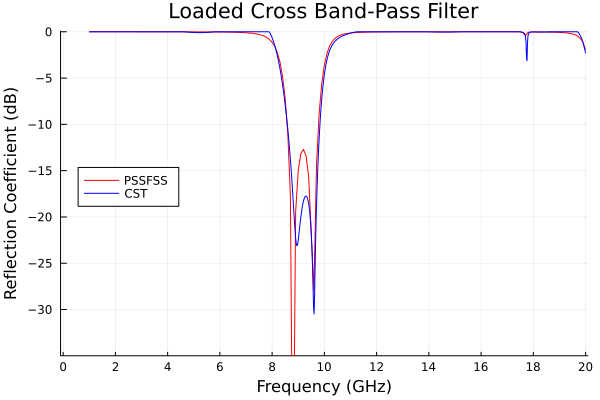
p2 = plot(xlabel="Frequency (GHz)", ylabel="Transmission Coefficient (dB)",
legend=:bottom, title="Loaded Cross Band-Pass Filter", xtick=0:2:20, ytick=-80:10:0,
xlim=(-0.1,20.1), ylim=(-80,0.1))
plot!(p2, data[:,1], data[:,2], label="PSSFSS", color=:red)
plot!(p2, dat[:,1], dat[:,4], label="CST", color=:blue)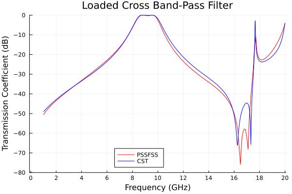
This analysis takes about 90 seconds for 191 frequencies on my machine. Note that rather than including two separate invocations of the loadedcross function when defining the strata, I referenced the same sheet object in the two different locations. This allows PSSFSS to recognize that the triangulations are identical, and to exploit this fact in making the analysis more efficient. In fact, if both sheets had been embedded in similar dielectric claddings (in the same order), then the GSM (generalized scattering matrix) computed for the sheet in its first location could be reused without additional computation for its second location. In this case, though, only the spatial integrals are re-used. For an oblique incidence case, computing the spatial integrals is often the most expensive part of the analysis, so the savings from reusing the same sheet definition can be substantial.
Conclusion
Very good agreement is obtained versus CST over a large dynamic range.
Meanderline-Based CPSS
A "CPSS" is a circular polarization selective structure, i.e., a structure that reacts differently to the two senses of circular polarization. We'll first look at analyzing a design presented in the literature, and then proceed to optimize another design using PSSFSS as the analysis engine inside the optimization objective function.
Sjöberg and Ericsson Design
This example comes from the paper D. Sjöberg and A. Ericsson, "A multi layer meander line circular polarization selective structure (MLML-CPSS)," The 8th European Conference on Antennas and Propagation (EuCAP 2014), 2014, pp. 464-468, doi: 10.1109/EuCAP.2014.6901792.
The authors describe an ingenious structure consisting of 5 progressively rotated meanderline sheets, which acts as a circular polarization selective surface: it passes LHCP (almost) without attenuation or reflection, and reflects RHCP (without changing its sense!) almost without attenuation or transmission.
Here is the script that analyzes their design:
using PSSFSS
# Define convenience functions for sheets:
outer(rot) = meander(a=3.97, b=3.97, w1=0.13, w2=0.13, h=2.53+0.13, units=mm, ntri=600, rot=rot)
inner(rot) = meander(a=3.97*√2, b=3.97/√2, w1=0.1, w2=0.1, h=0.14+0.1, units=mm, ntri=600, rot=rot)
center(rot) = meander(a=3.97, b=3.97, w1=0.34, w2=0.34, h=2.51+0.34, units=mm, ntri=600, rot=rot)
# Note our definition of `h` differs from that of the reference by the width of the strip.
t1 = 4mm # Outer layers thickness
t2 = 2.45mm # Inner layers thickness
substrate = Layer(width=0.1mm, epsr=2.6)
foam(w) = Layer(width=w, epsr=1.05) # Foam layer convenience function
rot0 = 0 # rotation of first sheet
strata = [
Layer()
outer(rot0)
substrate
foam(t1)
inner(rot0 - 45)
substrate
foam(t2)
center(rot0 - 2*45)
substrate
foam(t2)
inner(rot0 - 3*45)
substrate
foam(t1)
outer(rot0 - 4*45)
substrate
Layer() ]
steering = (θ=0, ϕ=0)
flist = 10:0.1:20
#
results = analyze(strata, flist, steering, showprogress=false,
resultfile=devnull, logfile=devnull);Here are plots of the five meanderline sheets:
using Plots
plot(outer(rot0), unitcell=true, title="Sheet1")plot(inner(rot0-45), unitcell=true, title="Sheet2")plot(center(rot0-2*45), unitcell=true, title="Sheet3 (Center)")plot(inner(rot0-3*45), unitcell=true, title="Sheet4")plot(outer(rot0-4*45), unitcell=true, title="Sheet5")Notice that not only are the meanders rotated, but so too are the unit cell rectangles. This is because we used the generic rot keyword argument that rotates the entire unit cell and its contents. rot can be used for any FSS or PSS element type. As a consequence of the different rotations applied to each unit cell, interactions between sheets due to higher-order modes cannot be accounted for; only the dominant $m=n=0$ TE and TM modes are used in cascading the individual sheet scattering matrices. This approximation is adequate for sheets that are sufficiently separated. We can see from the log file (saved from a previous run where it was not disabled) that only 2 modes are used to model the interactions between sheets:
Starting PSSFSS analysis on 2021-05-09 at 04:16:07.871
******************* Warning ***********************
Unequal unit cells in sheets 1 and 2
Setting #modes in dividing layer 3 to 2
******************* Warning ***********************
******************* Warning ***********************
Unequal unit cells in sheets 2 and 3
Setting #modes in dividing layer 5 to 2
******************* Warning ***********************
******************* Warning ***********************
Unequal unit cells in sheets 3 and 4
Setting #modes in dividing layer 7 to 2
******************* Warning ***********************
******************* Warning ***********************
Unequal unit cells in sheets 4 and 5
Setting #modes in dividing layer 9 to 2
******************* Warning ***********************
Dielectric layer information...
Layer Width units epsr tandel mur mtandel modes beta1x beta1y beta2x beta2y
----- ------------- ------- ------ ------- ------ ----- ------- ------- ------- -------
1 0.0000 mm 1.00 0.0000 1.00 0.0000 2 1582.7 0.0 0.0 1582.7
================== Sheet 1 ======================== 1582.7 0.0 0.0 1582.7
2 0.1000 mm 2.60 0.0000 1.00 0.0000 0 0.0 0.0 0.0 0.0
3 4.0000 mm 1.05 0.0000 1.00 0.0000 2 1582.7 0.0 0.0 1582.7
================== Sheet 2 ======================== 791.3 -791.3 1582.7 1582.7
4 0.1000 mm 2.60 0.0000 1.00 0.0000 0 0.0 0.0 0.0 0.0
5 2.4500 mm 1.05 0.0000 1.00 0.0000 2 791.3 -791.3 1582.7 1582.7
================== Sheet 3 ======================== 0.0 -1582.7 1582.7 0.0
6 0.1000 mm 2.60 0.0000 1.00 0.0000 0 0.0 0.0 0.0 0.0
7 2.4500 mm 1.05 0.0000 1.00 0.0000 2 0.0 -1582.7 1582.7 0.0
================== Sheet 4 ======================== -791.3 -791.3 1582.7 -1582.7
8 0.1000 mm 2.60 0.0000 1.00 0.0000 0 0.0 0.0 0.0 0.0
9 4.0000 mm 1.05 0.0000 1.00 0.0000 2 -791.3 -791.3 1582.7 -1582.7
================== Sheet 5 ======================== -1582.7 -0.0 0.0 -1582.7
10 0.1000 mm 2.60 0.0000 1.00 0.0000 0 0.0 0.0 0.0 0.0
11 0.0000 mm 1.00 0.0000 1.00 0.0000 2 -1582.7 -0.0 0.0 -1582.7
...Note that PSSFSS prints warnings to the log file where it is forced to set the number of layer modes to 2 because of unequal unit cells. Also, in the dielectric layer list it can be seen that these layers are assigned 2 modes each. The thin layers adjacent to sheets are assigned 0 modes because these sheets are incorporated into so-called "GSM blocks" or "Gblocks" wherein the presence of the thin layer is accounted for using the stratified medium Green's functions.
Here is the script that compares PSSFSS predicted performance with very high accuracy predictions from CST and COMSOL that were digitized from figures in the paper.
using Plots, DelimitedFiles
RL11rr = -extract_result(results, @outputs s11db(r,r))
AR11r = extract_result(results, @outputs ar11db(r))
IL21L = -extract_result(results, @outputs s21db(L,L))
AR21L = extract_result(results, @outputs ar21db(L))
default(lw=2, xlim=(10,20), xtick=10:20, ylim=(0,3), ytick=0:0.5:3, gridalpha=0.3,
framestyle=:box)
p = plot(flist,RL11rr,title="RHCP → RHCP Return Loss",
xlabel="Frequency (GHz)", ylabel="Return Loss (dB)", label="PSSFSS")
cst = readdlm("../src/assets/cpss_cst_fine_digitized_rl.csv", ',')
plot!(p, cst[:,1], cst[:,2], label="CST")
comsol = readdlm("../src/assets/cpss_comsol_fine_digitized_rl.csv", ',')
plot!(p, comsol[:,1], comsol[:,2], label="COMSOL")
p = plot(flist,AR11r,title="RHCP → RHCP Reflected Axial Ratio",
xlabel="Frequency (GHz)", ylabel="Axial Ratio (dB)", label="PSSFSS")
cst = readdlm("../src/assets/cpss_cst_fine_digitized_ar_reflected.csv", ',')
plot!(p, cst[:,1], cst[:,2], label="CST")
comsol = readdlm("../src/assets/cpss_comsol_fine_digitized_ar_reflected.csv", ',')
plot!(p, comsol[:,1], comsol[:,2], label="COMSOL")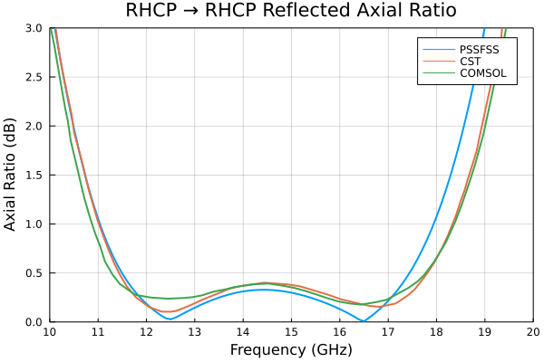
p = plot(flist,IL21L,title="LHCP → LHCP Insertion Loss",
xlabel="Frequency (GHz)", ylabel="Insertion Loss (dB)", label="PSSFSS")
cst = readdlm("../src/assets/cpss_cst_fine_digitized_il.csv", ',')
plot!(p, cst[:,1], cst[:,2], label="CST")
comsol = readdlm("../src/assets/cpss_comsol_fine_digitized_il.csv", ',')
plot!(p, comsol[:,1], comsol[:,2], label="COMSOL")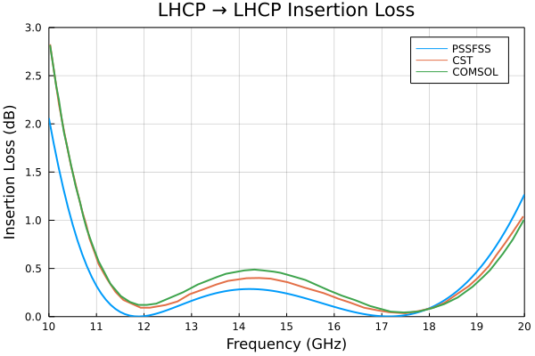
p = plot(flist,AR21L,title="LHCP → LHCP Transmitted Axial Ratio",
xlabel="Frequency (GHz)", ylabel="Axial Ratio (dB)", label="PSSFSS")
cst = readdlm("../src/assets/cpss_cst_fine_digitized_ar_transmitted.csv", ',')
plot!(p, cst[:,1], cst[:,2], label="CST")
comsol = readdlm("../src/assets/cpss_comsol_fine_digitized_ar_transmitted.csv", ',')
plot!(p, comsol[:,1], comsol[:,2], label="COMSOL")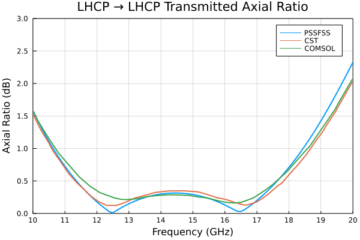
The PSSFSS results generally track well with the high-accuracy solutions, but are less accurate especially at the high end of the band, presumably because cascading is performed in PSSFSS for this structure using only the two principal Floquet modes. As previosly discussed, this is necessary because the rotated meanderlines are achieved by rotating the entire unit cell, and the unit cell for sheets 2 and 4 are not square. Since the periodicity of the sheets in the structure varies from sheet to sheet, higher order Floquet modes common to neighboring sheets cannot be defined, so we are forced to use only the dominant (0,0) modes which are independent of the periodicity. This limitation is removed in a later example. Meanwhile, it is of interest to note that their high-accuracy runs required 10 hours for CST and 19 hours for COMSOL on large engineering workstations. The PSSFSS run took about 60 seconds on my desktop machine.
Design Based on PSSFSS Optimization with CMAES
Here we use PSSFSS in conjunction with the CMAES optimizer from the CMAEvolutionStrategy package. I've used CMAES in the past with good success on some tough optimization problems. Here is the code that defines the objective function:
using PSSFSS
using Dates: now
let bestf = typemax(Float64)
function objective(x)
period, wo, ho, wi, hi, wc, hc, t1, t2 = x
ao = bo = ai = bi = ac = bc = period
ai *= √2
bi /= √2
# Ensure physically realizable or return large value:
(bo > ho > 2.1*wo && bi > hi > 2.1*wi && bc > hc > 2.1*wc) || (return 5000.0)
outer(rot) = meander(a=ao, b=bo, w1=wo, w2=wo, h=ho, units=mm, ntri=400, rot=rot)
inner(rot) = meander(a=ai, b=bi, w1=wi, w2=wi, h=hi, units=mm, ntri=400, rot=rot)
center(rot) = meander(a=ac, b=bc, w1=wc, w2=wc, h=hc, units=mm, ntri=400, rot=rot)
substrate = Layer(width=0.1mm, epsr=2.6)
foam(w) = Layer(width=w, epsr=1.05)
rot0 = 0
strata = [
Layer()
outer(rot0)
substrate
foam(t1*1mm)
inner(rot0 - 45)
substrate
foam(t2*1mm)
center(rot0 - 2*45)
substrate
foam(t2*1mm)
inner(rot0 - 3*45)
substrate
foam(t1*1mm)
outer(rot0 - 4*45)
substrate
Layer() ]
steering = (θ=0, ϕ=0)
flist = 11:0.25:19
results = analyze(strata, flist, steering, showprogress=false)
s11rr, s21ll, ar11db, ar21db = eachcol(extract_result(results,
@outputs s11db(R,R) s21db(L,L) ar11db(R) ar21db(L)))
RL = -s11rr
IL = -s21ll
obj = maximum(vcat(RL,IL,ar11db,ar21db))
if obj < bestf
bestf = obj
open("optimization_best.log", "a") do fid
xround = round.(x, digits=4)
println(fid, round(obj,digits=4), " at x = ", xround, " #", now())
end
end
return obj
end
endWe optimize at 33 frequencies between 11 and 19 GHz. The actual frequency range of interest is 12 to 18 GHz; the wider optimization band provides some safety margin. Each objective function evaluation takes about 24 seconds on my machine. As you can see from the code above, each successive sheet in the structure is rotated an additional 45 degrees relative to its predecessor. The objective is defined as the largest value of RHCP reflected return loss, LHCP insertion loss, or reflected or transmitted axial ratio that occurs at any of the analysis frequencies (i.e. we are setting up for "minimax" optimization). Also, the let block allows the objective function to maintain persistent state in the variable bestf which is initialized to the largest 64-bit floating point value. Each time a set of inputs results in a lower objective function value, bestf is updated with this value and the inputs and objective function value are written to the file "optimization_best.log", along with a date/time stamp. This allows the user to monitor the optimization and to terminate the it prematurely, if desired, without losing the best result achieved so far.
Here is the code for running the optimization:
using CMAEvolutionStrategy
# x = [period, wo, ho, wi, hi, wc, hc, t1, t2]
xmin = [3.0, 0.1, 0.1, 0.1, 0.1, 0.1, 0.1, 1.5, 1.5]
xmax = [5.5, 0.35,4.0, 0.35, 4.0, 0.35, 4.0, 6.0, 6.0]
x0 = 0.5 * (xmin + xmax)
popsize = 2*(4 + floor(Int, 3*log(length(x0))))
isfile("optimization_best.log") && rm("optimization_best.log")
opt = minimize(objective, x0, 1.0;
lower = xmin,
upper = xmax,
maxfevals = 9000,
xtol = 1e-4,
ftol = 1e-5,
popsize=popsize)Note that I set the population size to twice the normal default value. Based on previous experience, using 2 to 3 times the default population size helps the optimizer to do better on tough objective functions like the present one. I let the optimizer run for 6 hours, during which time it reduced the objective function value from 11.88 dB to 0.86 dB. It was then interrupted due to a file system error. I restarted it after setting the starting value to the current best and reducing the "sigma" value (the third argument to minimize, which controls the algorithms exploratory tendency) to 0.2 (slightly greater than the value it had achieved during the aborted run) from its default value of 1. After about 13 hours the program terminated normally due to insufficient changes in the x variable. The final value of objective function was 0.65 dB.
Here is a look at the final portion of the file "optimization_best.log":
0.6535 at x = [3.0968, 0.1025, 2.1601, 0.1003, 0.95, 0.3377, 2.3584, 4.3813, 2.2974] #2021-05-09T23:02:40.230
0.6533 at x = [3.0991, 0.1028, 2.162, 0.1002, 0.944, 0.3372, 2.3562, 4.3801, 2.3007] #2021-05-09T23:27:38.132
0.6532 at x = [3.0985, 0.1029, 2.1652, 0.1003, 0.9414, 0.337, 2.3547, 4.3766, 2.3036] #2021-05-09T23:46:19.068
0.6531 at x = [3.0998, 0.1028, 2.164, 0.1001, 0.9443, 0.3378, 2.3558, 4.3783, 2.3028] #2021-05-09T23:49:13.202
0.6529 at x = [3.0988, 0.1028, 2.1652, 0.1002, 0.9422, 0.3372, 2.3545, 4.3765, 2.3039] #2021-05-09T23:50:58.064
0.6529 at x = [3.0985, 0.1029, 2.1687, 0.1002, 0.9407, 0.3368, 2.3526, 4.3714, 2.3073] #2021-05-10T00:11:36.314
0.6529 at x = [3.0976, 0.1028, 2.1688, 0.1004, 0.9443, 0.3374, 2.3532, 4.3716, 2.3062] #2021-05-10T00:16:16.205
0.6528 at x = [3.0991, 0.1028, 2.1679, 0.1002, 0.9444, 0.3376, 2.3539, 4.3735, 2.3056] #2021-05-10T00:20:04.181
0.6527 at x = [3.0987, 0.1027, 2.1664, 0.1001, 0.9443, 0.3375, 2.3544, 4.3751, 2.3045] #2021-05-10T00:33:08.779
0.6527 at x = [3.0972, 0.1029, 2.1692, 0.1002, 0.9362, 0.336, 2.3512, 4.3707, 2.3083] #2021-05-10T00:39:14.306
0.6527 at x = [3.0985, 0.1028, 2.1663, 0.1001, 0.9426, 0.3372, 2.3539, 4.3749, 2.3049] #2021-05-10T00:40:59.223
0.6527 at x = [3.0974, 0.1028, 2.1688, 0.1002, 0.9424, 0.3371, 2.3527, 4.3718, 2.3069] #2021-05-10T00:51:08.383
0.6526 at x = [3.0982, 0.1028, 2.1678, 0.1001, 0.9422, 0.3371, 2.3531, 4.373, 2.3061] #2021-05-10T00:56:58.562
0.6526 at x = [3.0979, 0.1028, 2.1682, 0.1001, 0.9406, 0.3369, 2.3529, 4.3725, 2.3066] #2021-05-10T00:59:51.875
0.6525 at x = [3.0974, 0.1028, 2.1675, 0.1001, 0.9411, 0.3369, 2.353, 4.3735, 2.306] #2021-05-10T01:03:39.402The performance of this design is shown below:


It would probably be possible to do improve the performance somewhat over the 12-18 GHz band by weighting the various contributions to the objective function and/or tapering the requirements of the objective function at the band edges. Also, in a serious design effort, several additional runs of the optimizer should be attempted, since results vary for stochastic algorithms like CMAES.
Meanderline/Strip-Based CPSS
This example comes from the same authors as the previous example. The paper is A. Ericsson and D. Sjöberg, "Design and Analysis of a Multilayer Meander Line Circular Polarization Selective Structure", IEEE Trans. Antennas Propagat., Vol. 65, No. 8, Aug 2017, pp. 4089-4101. The design is similar to that of the previous example except that here, the two $\pm 45^\circ$ rotated meanderlines are replaced with rectangular strips. This allows us to employ the diagstrip element and the orient keyword for the meander elements to maintain the same, square unit cell for all sheets. By doing this we allow PSSFSS to rigorously account for the inter-sheet coupling using multiple high-order modes in the generalized scattering matrix (GSM) formulation.
We begin by computing the skin depth and sheet resistance for the copper traces. The conductivity and thickness are as stated in the paper:
# Compute skin depth and sheet resistance:
using PSSFSS.Constants: μ₀ # free-space permeability [H/m]
f = (10:0.1:20) * 1e9 # frequencies in Hz
σ = 58e6 # conductivity of metalization [S/m]
t = 18e-6 # metalization thickness [m]
Δ = sqrt.(2 ./ (2π*f*σ*μ₀)) # skin depth [m]
@show extrema(t./Δ)(27.237445255106902, 38.519564484166885)
Rs = 1 ./ (σ * Δ)
@show extrema(Rs)(0.02608950694933611, 0.036896134563378244)
We see that the metal is many skin depths thick (effectively infinitely thick) so that we can use the thick metal surface sheet resistance formula. Since the latter varies with frequency, we approximate it over the band 10-20 GHz by a value near its mean: 0.032 Ω/□.
Here is the script that analyzes the design from the referenced paper:
using PSSFSS
P = 5.2 # side length of unit square
d1 = 2.61 # Inner layer thickness
d2 = 3.81 # Outer layer thickness
h0 = 2.44 # Inner meanderline dimension (using paper's definition of h)
h2 = 2.83 # Outer meanderline dimension (using paper's definition of h)
w0x = 0.46 # Inner meanderline line thickness of traces running along x
w0y = 0.58 # Inner meanderline line thickness of traces running along y
w1 = 0.21 # Rectangular strips width
w2x = 0.25 # Outer meanderline line thickness of traces running along x
w2y = 0.17 # Outer meanderline line thickness of traces running along y
outer(orient) = meander(a=P, b=P, w1=w2y, w2=w2x, h=h2+w2x, units=mm, ntri=600,
Rsheet=0.032, orient=orient)
inner = meander(a=P, b=P, w1=w0y, w2=w0x, h=h0+w0x, units=mm, ntri=600, Rsheet=0.032)
strip(orient) = diagstrip(P=P, w=w1, units=mm, Nl=60, Nw=4, orient=orient, Rsheet=0.032)
substrate = Layer(width=0.127mm, epsr=2.17, tandel=0.0009)
foam(w) = Layer(width=w, epsr=1.043, tandel=0.0017)
sheets = [outer(-90), strip(-45), inner, strip(45), outer(90)]
strata = [
Layer()
substrate
sheets[1]
foam(d2 * 1mm)
substrate
sheets[2]
foam(d1 * 1mm)
sheets[3]
substrate
foam(d1 * 1mm)
substrate
sheets[4]
foam(d2 * 1mm)
sheets[5]
substrate
Layer() ]
steering = (θ=0, ϕ=0)
flist = 10:0.1:20
results = analyze(strata, flist, steering, logfile=devnull,
resultfile=devnull, showprogress=false)The PSSFSS run took about 85 seconds on my machine. Here are plots of the five sheets:
using Plots
default()
ps = []
for k in 1:5
push!(ps, plot(sheets[k], unitcell=true, title="Sheet $k", linecolor=:red))
end
plot(ps..., layout=5)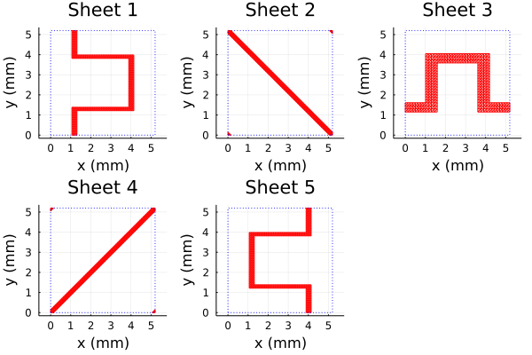
Notice that for all 5 sheets, the unit cell is a square of constant side length and is unrotated. We can see from the log file (of a previous run where it was not suppressed) that this allows PSSFSS to use additional modes in the GSM cascading procedure:
Starting PSSFSS analysis on 2021-05-26 at 09:54:02.902
Dielectric layer information...
Layer Width units epsr tandel mur mtandel modes beta1x beta1y beta2x beta2y
----- ------------- ------- ------ ------- ------ ----- ------- ------- ------- -------
1 0.0000 mm 1.00 0.0000 1.00 0.0000 2 1208.3 0.0 0.0 1208.3
2 0.1270 mm 2.17 0.0009 1.00 0.0000 0 0.0 0.0 0.0 0.0
================== Sheet 1 ======================== 1208.3 0.0 0.0 1208.3
3 3.8100 mm 1.04 0.0017 1.00 0.0000 10 1208.3 0.0 0.0 1208.3
4 0.1270 mm 2.17 0.0009 1.00 0.0000 0 0.0 0.0 0.0 0.0
================== Sheet 2 ======================== 1208.3 0.0 0.0 1208.3
5 2.6100 mm 1.04 0.0017 1.00 0.0000 18 1208.3 0.0 0.0 1208.3
================== Sheet 3 ======================== 1208.3 0.0 0.0 1208.3
6 0.1270 mm 2.17 0.0009 1.00 0.0000 0 0.0 0.0 0.0 0.0
7 2.6100 mm 1.04 0.0017 1.00 0.0000 18 1208.3 0.0 0.0 1208.3
8 0.1270 mm 2.17 0.0009 1.00 0.0000 0 0.0 0.0 0.0 0.0
================== Sheet 4 ======================== 1208.3 0.0 0.0 1208.3
9 3.8100 mm 1.04 0.0017 1.00 0.0000 10 1208.3 0.0 0.0 1208.3
================== Sheet 5 ======================== 1208.3 0.0 0.0 1208.3
10 0.1270 mm 2.17 0.0009 1.00 0.0000 0 0.0 0.0 0.0 0.0
11 0.0000 mm 1.00 0.0000 1.00 0.0000 2 1208.3 0.0 0.0 1208.3
...Layers 3 and 9 were assigned 10 modes each. Layers 5 and 7, being thinner were assigned 18 modes each. The numbers of modes are determined automatically by PSSFSS to ensure accurate cascading.
Here are comparison plots of PSSFSS versus highly converged CST predictions digitized from plots presented in the paper:
using Plots, DelimitedFiles
RLl = -extract_result(results, @outputs s11db(l,l))
AR11l = extract_result(results, @outputs ar11db(l))
IL21r = -extract_result(results, @outputs s21db(r,r))
AR21r = extract_result(results, @outputs ar21db(r))
default(lw=2, xlabel="Frequency (GHz)", xlim=(10,20), xtick=10:2:20,
framestyle=:box, gridalpha=0.3)
plot(flist,RLl,title="LHCP → LHCP Return Loss", label="PSSFSS",
ylabel="Return Loss (dB)", ylim=(0,3), ytick=0:0.5:3)
cst = readdlm("../src/assets/ericsson_cpss_digitized_rllhcp.csv", ',')
plot!(cst[:,1], cst[:,2], label="CST")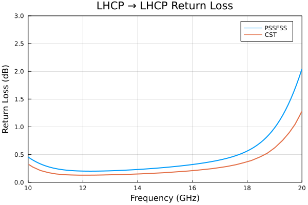
plot(flist,AR11l,title="LHCP → LHCP Reflected Axial Ratio", label="PSSFSS",
ylabel="Axial Ratio (dB)", ylim=(0,3), ytick=0:0.5:3)
cst = readdlm("../src/assets/ericsson_cpss_digitized_arlhcp.csv", ',')
plot!(cst[:,1], cst[:,2], label="CST")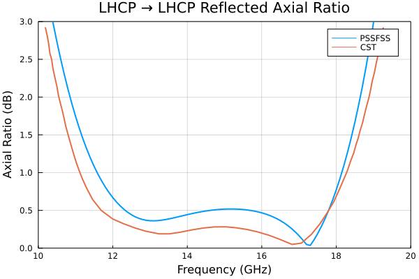
plot(flist,AR21r,title="RHCP → RHCP Transmitted Axial Ratio", label="PSSFSS",
ylabel="Axial Ratio (dB)", ylim=(0,3), ytick=0:0.5:3)
cst = readdlm("../src/assets/ericsson_cpss_digitized_arrhcp.csv", ',')
plot!(cst[:,1], cst[:,2], label="CST")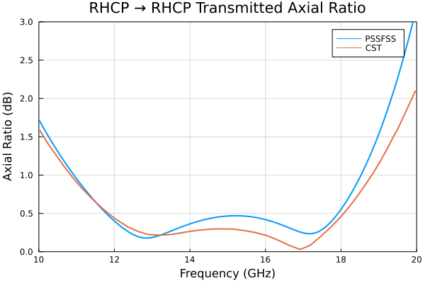
plot(flist,IL21r,title="RHCP → RHCP Insertion Loss", label="PSSFSS",
ylabel="Insertion Loss (dB)", ylim=(0,3), ytick=0:0.5:3)
cst = readdlm("../src/assets/ericsson_cpss_digitized_ilrhcp.csv", ',')
plot!(cst[:,1], cst[:,2], label="CST")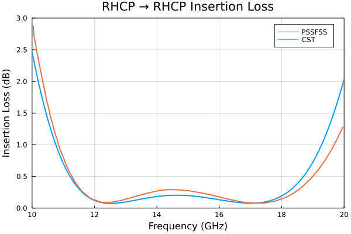
Differences between the PSSFSS and CST predictions are attributed to the fact that the metalization thickness of 18 μm was included in the CST model but cannot be accommodated by PSSFSS.
=======
main